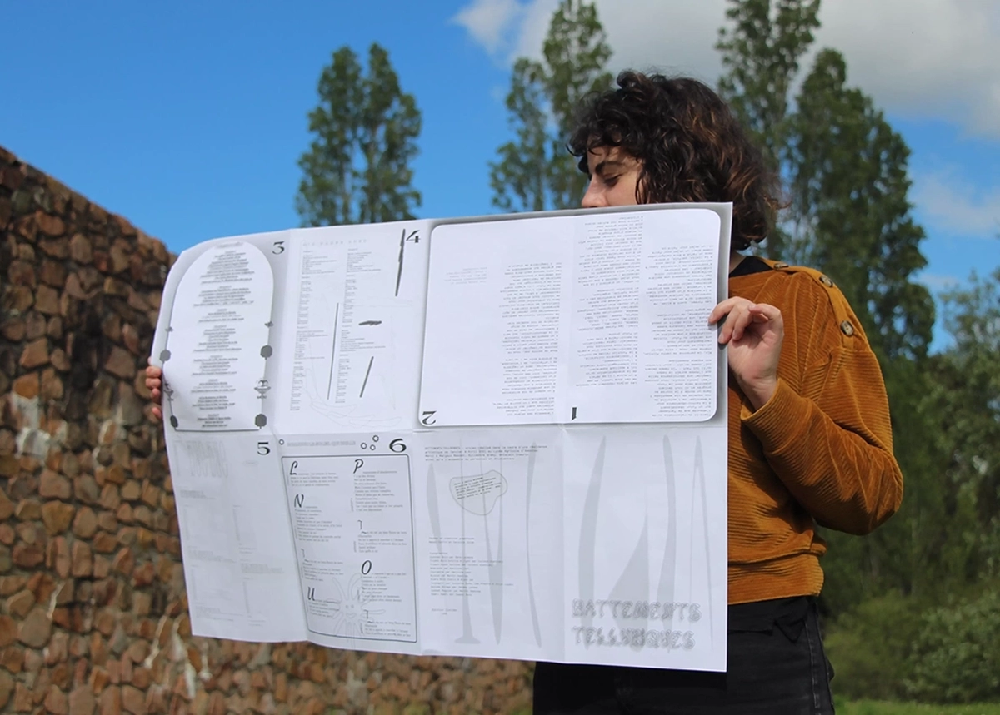
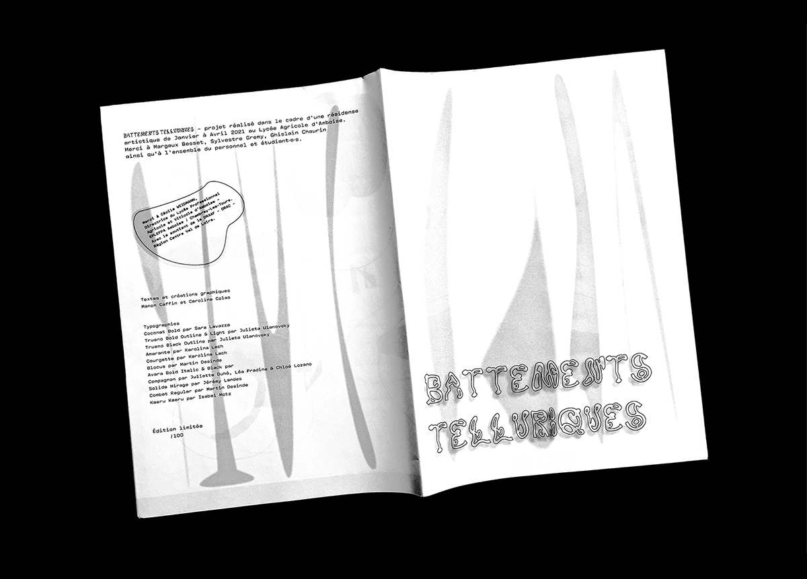
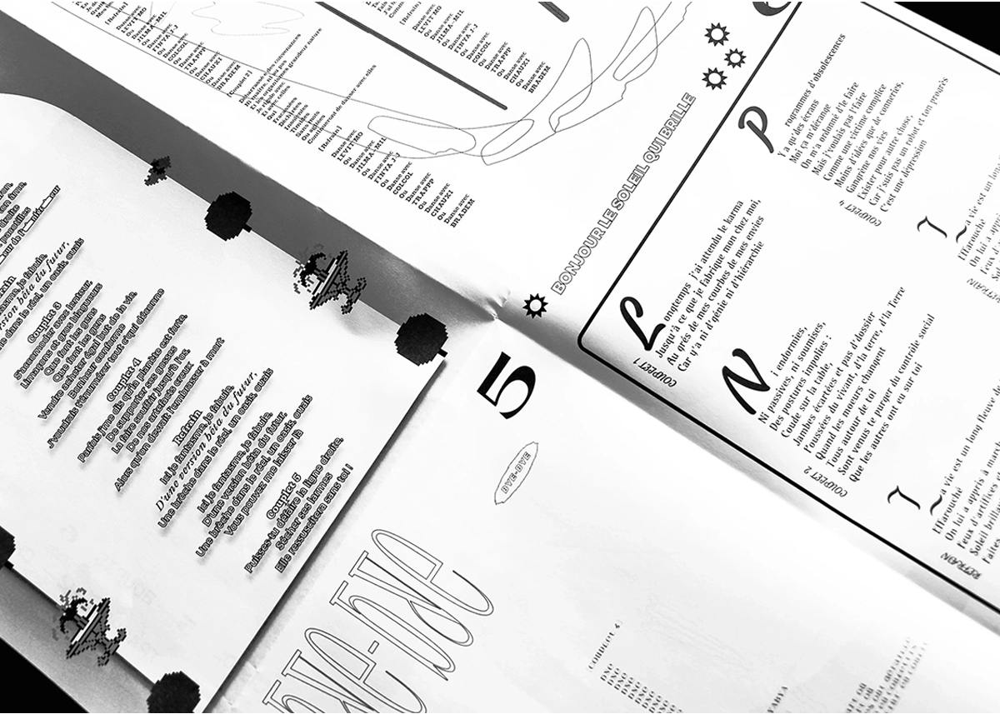
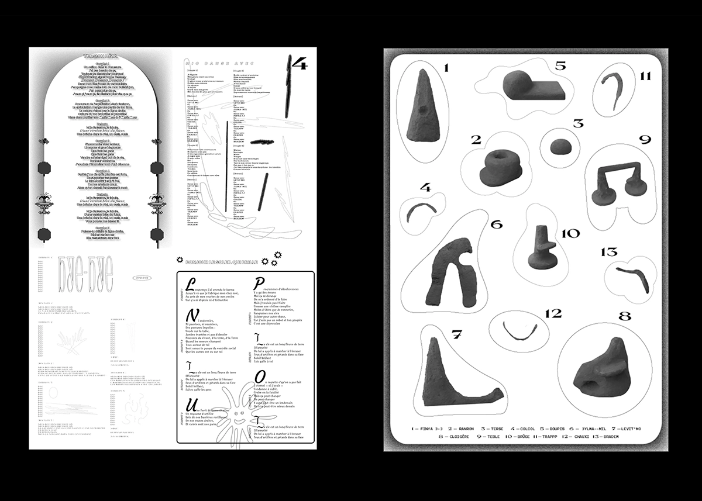
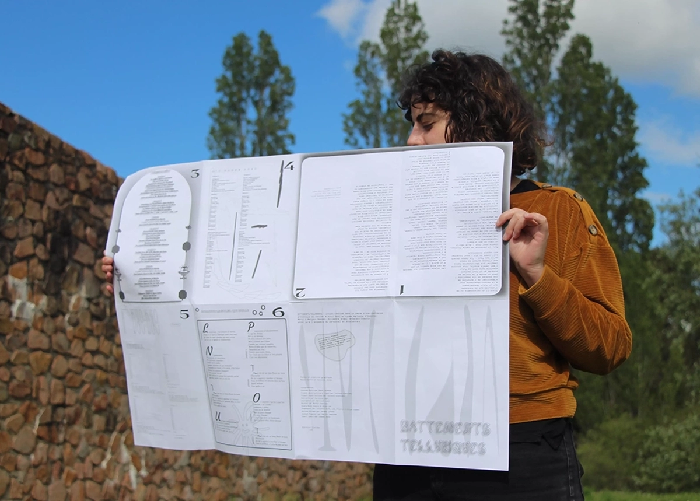
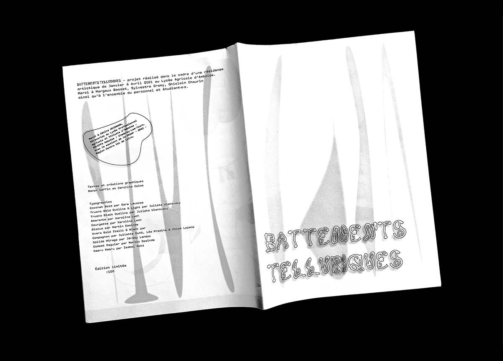
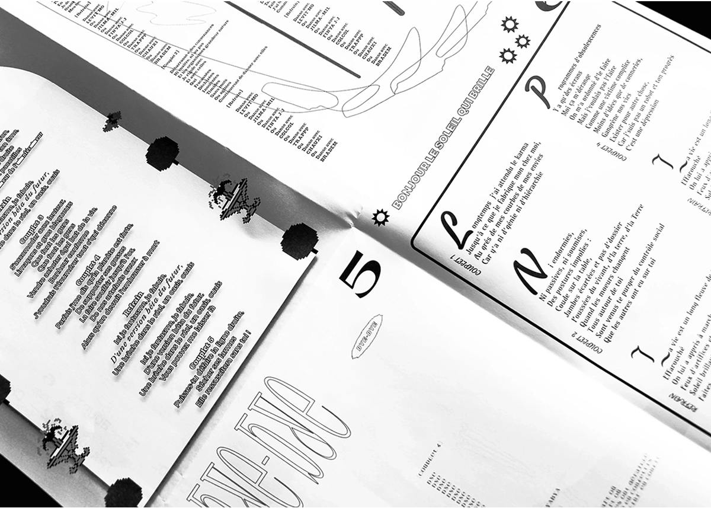
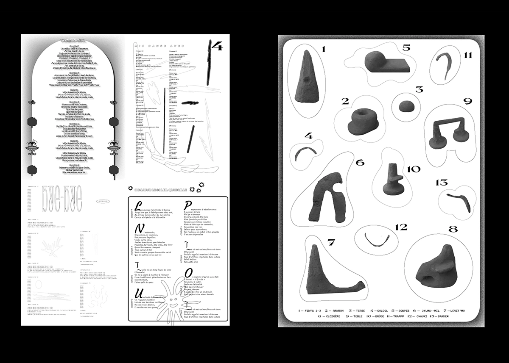

Scénographie issue d'une fiction, articulant des sculptures créées sur-mesure, une édition et l'installation d'un rideau suspendu. Cette exposition s'est tenue au sein des locaux du Lycée Agricole d'Amboise. Mio, la personne de cette fiction, écrit pour nous : il·elle décrit un vécu et son présent - représentant une version du futur. Victime collatérale d'une société en déclin qui ne cesse de manquer le coche des lanceur·euses d'alerte.
Commanditaire : DRAC
Année : 2021
Missions : Résidence, print, scénographie, expérimentation
Collaboratrice : Caroline Colas
 






